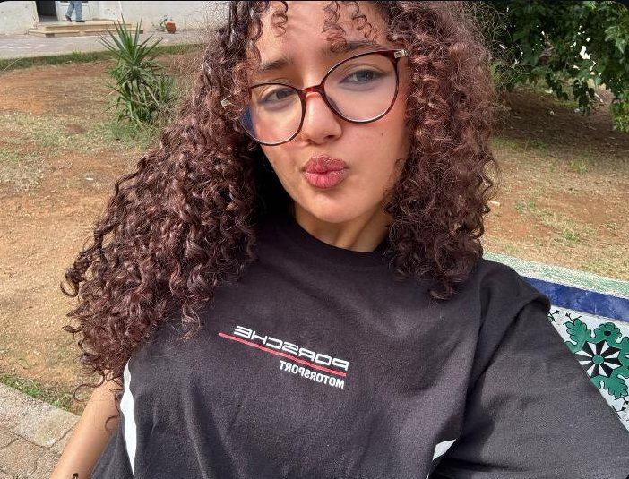

Architecture student by day, tailor and patternmaker by night
Welcome to my studio corner. Between structural mechanics evaluations and urban theory seminars, I craft sustainable bespoke garments on an all-metal vintage Singer. Every piece is cut by hand with architectural drafting precision, finished with reinforced french seams, and tailored to endure for years.